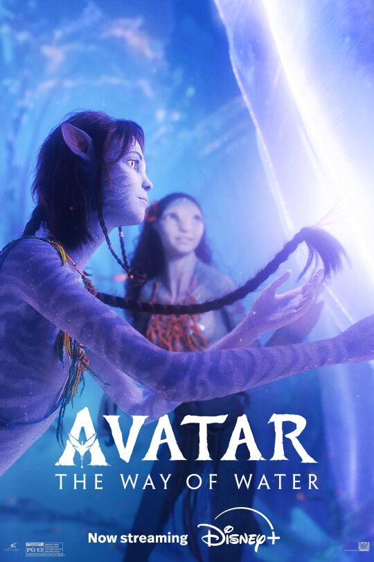
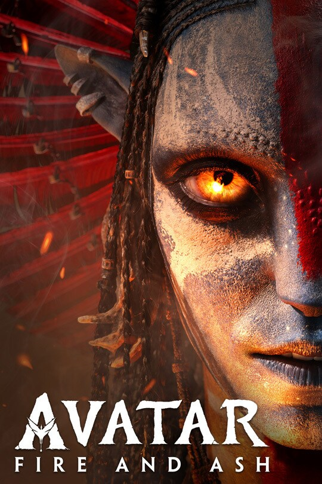

La trilogía de Avatar :
Avatar
Clasificación: PG-13 Duración: 3h 12min Estreno: 16 de diciembre de 2022 Género: Acción, Aventura, Ciencia Ficción
En el año 2154, Jake Sully, un ex marine, es enviado a Pandora, una luna lejana donde una empresa busca un mineral muy valioso. Para sobrevivir, Jake usa un avatar, un cuerpo especial que puede vivir en ese mundo. Allí conoce a Neytiri, una integrante del pueblo Na’vi, y empieza a entender su forma de vida. Jake tendrá que elegir entre ayudar a los humanos o defender a Pandora en una gran batalla.
Director: James Cameron
Actores: Sam Worthington, Zoe Saldaña, Sigourney Weaver
▶ Ver tráiler
Avatar: El camino del agua
Clasificación: PG-13 Duración: 3h 12min Estreno: 16 de diciembre de 2022 Género: Acción, Aventura, Ciencia Ficción
En esta historia, Jake Sully y Neytiri viven con su familia en Pandora, pero nuevos peligros los obligan a huir y buscar refugio con otros clanes Na’vi. Juntos deberán proteger a su familia y enfrentar grandes desafíos en un mundo lleno de nuevas criaturas y océanos impresionantes.
Director: James Cameron
Productor: James Cameron, Jon Landau
Actores: Sam Worthington, Zoe Saldaña, Sigourney Weaver, Stephen Lang, Kate Winslet
▶ Ver tráiler
Avatar: Fuego y ceniza
Clasificación: PG-13 Duración: 3h 15min Estreno: 19 de diciembre de 2025 Género: Acción, Aventura, Ciencia Ficción
En esta nueva historia, Jake Sully, ahora líder Na’vi, regresa junto a Neytiri y su familia a Pandora. Juntos deberán enfrentar nuevos peligros y proteger su mundo en una aventura llena de acción y emoción.
Director: James Cameron
Productor: James Cameron, Jon Landau
Actores: Sam Worthington, Zoe Saldaña, Sigourney Weaver, Stephen Lang, Kate Winslet
▶ Ver tráiler